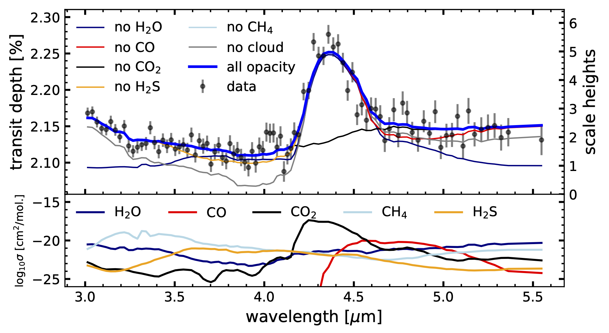

The Transiting Exoplanet Community Early Release Science Program is an Early Release Science (ERS) program for the James Webb Space Telescope (JWST). It aims to provide the astronomical community with publicly-available transit datasets and analysis toolkits as soon as possible after JWST's launch, as well as to help coordinate collaborations centered on learning how to make the most of JWST for studying exoplanet atmospheres. Details about the motivation, strategy, and expected results of the program can be found in Bean et al. (2018).
25 August 2022: Identification of carbon dioxide in an exoplanet atmosphere
We are pleased to share the 3-5 micron transmission spectrum of the exoplanet WASP-39b, observed with the NIRSpec PRISM on JWST. These wavelengths were previously observed only in broad photometric filters with the Spitzer Space Telescope, so seeing a clear spectroscopic detection of carbon dioxide is an exciting advance for this new telescope!
For details on this early result, please see:
- The accepted paper on arxiv.
- The press release and media from STScI.